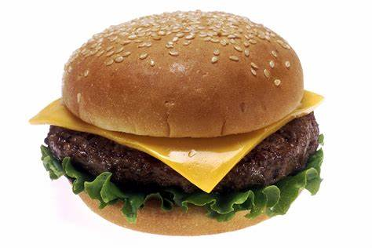
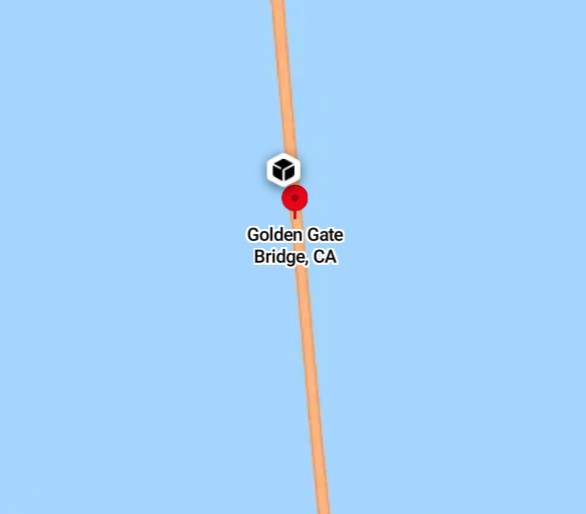
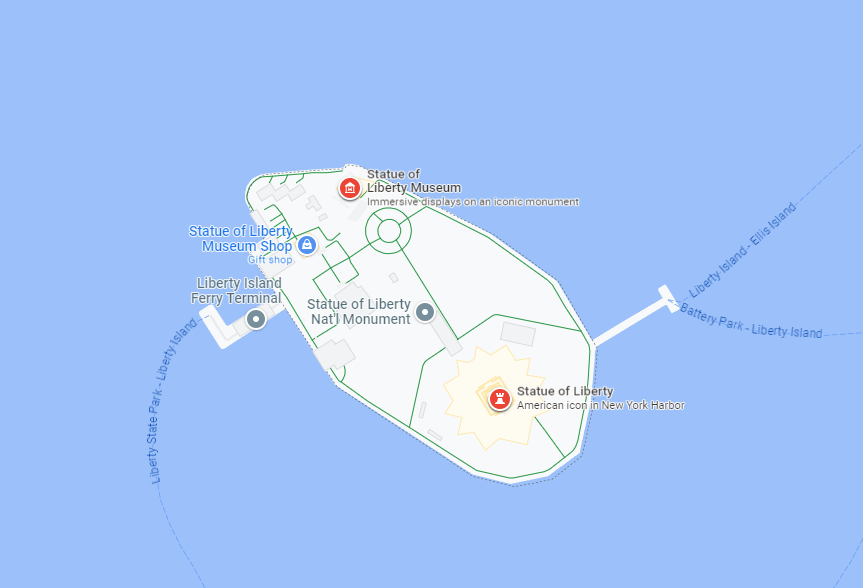
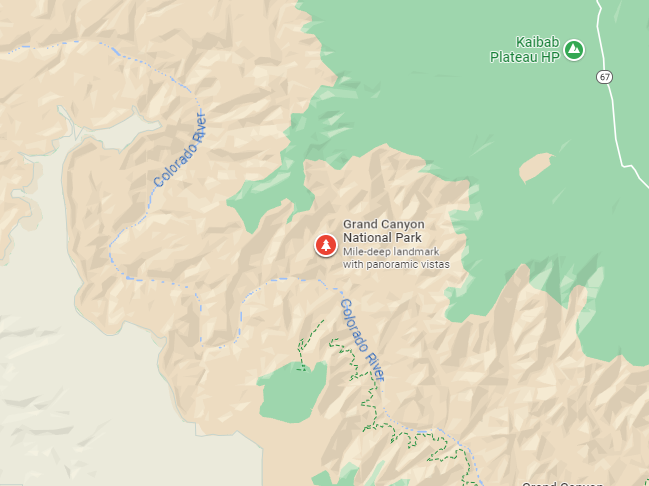

Make an unordered list of your favorite things here
Add three pictures, one remote, one local, and one in the image diretory

A picture of the fabled Hollow Knight - remote image
A picture of Lego Yoda - local
A picture of a cheeseburger - image directory
Add three places you have been with a short description about each, including a picture and map

My family had visited the golden gate bridge 8 years ago, although it was much more foggy than this

My family had visited New York City many times, one of those times was mainly for the Statue of Liberty

Roughly ten years ago my family visited the grand canyon and I remember using a old canon camera